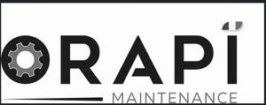

Trade Mark Journal No.2025/022 30 May 2025
UK00004176874 20 March 2025 (1,2,3,4,5,7,9,11,16,17,20,21,35)

International priority date claimed: 20 September 2024
(France)
(3083895)
- Class 1
- Chemicals for use in industry, as well as in agriculture, horticulture and forestry; chemical substances for preserving foodstuffs; chemical preparations for use as ingredients in cleaning and maintenance preparations; diatomaceous earth; descaling preparations, other than for household purposes; tanning substances ; chemical adsorbents ; synthetic resin adhesives for industrial purposes; synthetic resin adhesives for industrial purposes; anaerobic resins; glues, pastes, resins for fixing or sealing for industrial use; glues, other than for household or stationery use ; mastics for use in bonding ; mastic for industrial use; sealing paste; unprocessed synthetic resins for powder coatings in industrial applications; synthetic compounds for filling potholes in tarmac or asphalt (chemical substances); textile-waterproofing chemicals; leak detectors (chemicals); chemicals for the detection of leaks through foam emissions; chemicals for the detection of leaks by chemical reaction; chemicals for the waterproofing and dyeing of leather, and the treatment of fabrics (bleaching, fireproofing, dyeing, crease-resistant treatment); chemicals for use in metal treatment; chemicals for machining and metalworking; chemical preparations for use as solvents; salt [for deicing]; decolorants for industrial purposes; fertilizers; chemical additives for fuel treatment.
- Class 2
- Paints, varnishes, lacquers; corrosion inhibiting paint type coatings; preservatives against rust and against deterioration of wood; paint and varnish for marking, tracing and labelling; protection varnishes; colorants; mordants; natural resins (raw); metal foils and powders for painters, decorators, printers and artists.
- Class 3
- Preparations for bleaching ; preparations for washing; cleaning, polishing, shining, stain removal, scouring, abrasion, degreasing and paint stripping; cotton wool for hygiene, wiping, cleaning Soaps; Cleaning preparations for use in industry, in particular, soaps and shampoos. Preparations for vehicle care, in particular, shampoos, detergent, degreaser, insect repellent, tar remover. Solvent-based cleaning product. Cleaning products, paint strippers and degreasers designed for use in vehicle and heavy goods vehicle cleaning facilities. Products for renovating metals, in particular, vehicle parts. Stripping, cleaning products, in particular, for construction equipment. Products for cleaning and degreasing metal parts, vehicles, vehicle parts and machines in all industrial and construction sectors. Detergent for industrial floors. Pipe cleaning products, pipe unblockers. Sprays for dry-cleaning of computer or electromechanical equipment. Disposable wipes impregnated with cleaning, polishing, stain-removing, abrasive and/or scouring preparations. Deodorants other than for personal use.
- Class 4
- Industrial oils and greases; adhesive greases for technical use; lubricants; lubricating varnishes; anti-seize pastes for industrial use; anti-seize substances [oils]; dust absorbing, wetting and binding products; fuels (including motor spirit) and illuminants; candles and wicks for lighting; firewood; gas for lighting; textile oil; oil for the preservation of leather; industrial wax; dust removing preparations.
- Class 5
- Disinfectants, Disinfectant, bactericidal, virucidal and fungicidal detergents. Disinfectant lotions and wipes impregnated with disinfectant and/or deodorising lotions for sanitary purposes; Disinfectants, in particular liquid preparations in aerosol form; Deodorants other than for personal use; Preparations for cleaning the air; Odo ur destroyers for industrial facilities, business premises and car washes. Preparations for destroying noxious animals; pesticides; Preparations for destroying parasites; Moth killer; Insecticides and insect repellent in all forms; fungicides, herbicides, insecticides.
- Class 7
- Machines, apparatus and installations for cleaning, washing, stripping and dust exhausting; dust removing installations for high-pressure cleaning; industrial pressure sprayers [machines]; atomising machines; spraying machines, air pistols [sprayers]; glue guns [dispensing machines]; waxing and shining machines for electric floors and/or surfaces; machines and apparatus for polishing [electric]; road sweeping machines, self-propelled; brushes, electrically operated [parts of machines]; vacuum cleaners and pipes therefor; vacuum cleaner bags; vacuum cleaner accessories for dispensing deodorants and/or disinfectants; parts and fittings for all the aforesaid good. seals as machine, industrial installation and engine parts. wiping paper dispensers [machines]; absorbent material storage and sieving machines. Degreasing fountains [coating machines].
- Class 9
- Protection devices for personal use against accidents. Protective suits, gloves and masks [against accident], apparatus and instruments for measuring, mixing and diluting liquid solutions.
- Class 11
- Deodorizing apparatus, not for personal use. Wash fountains. Air purifying apparatus and machines. Water purifying apparatus and machines.
- Class 16
- Marking pens, felt marking pens. paper, cardboard; cardboard boxes; printed matter; photographs; stationery; adhesives for stationery or household purposes; paint brushes; typewriters and office requisites (except furniture); instructional and teaching material (except apparatus). Plastic materials for packaging non comprises (not included in other classes), namely, sheets and films; kitchen rolls [paper]; towels of paper, of cellulose wadding; handkerchiefs of paper; rubbish bags of paper or plastic; bags [envelopes, pouches] of paper or plastics, for packaging; face towels of paper; rolls of paper for wiping and cleaning [disposable paper products]; reels of paper wipes [disposable paper products]; food wrapping plastic film for household use; wrapping plastic film ; paper or cellulose wipes.
- Class 17
- Packing materials; packing, stopping and insulating materials; foams for insulation; materials for the reduction and absorption of noise and vibrations; semi-processed natural resins; synthetic resin compositions [semi-processed] for industrial purposes; sealing elements made of elastomers, rubber, silicone, polyurethane and all plastics such as gaskets.
- Class 20
- Packaging containers of plastic; Non-metallic containers for storing absorbent materials.
- Class 21
- Cleaning equipment, brooms, brushes (except paintbrushes) and Brush-making materials. Textiles for cleaning, in particular, skins of chamois, mops, dishcloths, cleaning cloths and sponges; reels of cotton wool for cleaning; Dispensers for soap, disinfectants, perfume, cleaning solutions and other liquid solutions, hand towels, paper, sachets, toilet paper, seat covers, tissues, wipes, sanitary napkins.
- Class 35
- The bringing together for others (excluding the transport thereof), of equipment, material and products for maintaining premises, buildings, industrial installations, machines and vehicles, enabling consumers to conveniently view and purchase them; presentation of goods on communications media and means of all kinds, in particular the internet, for retail purposes.
ORAPI MAINTENANCE
Representative: Wynne-Jones IP Limited